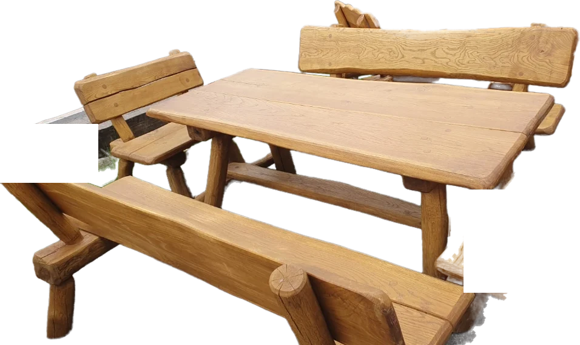
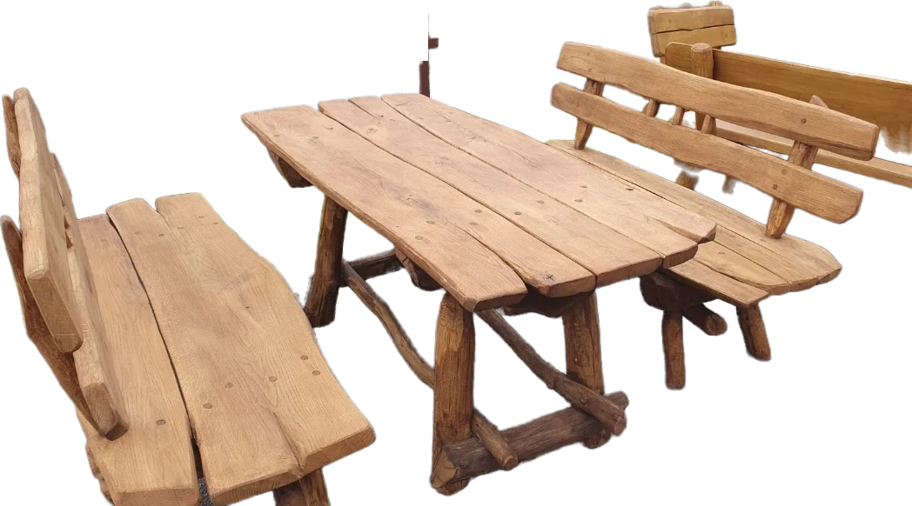
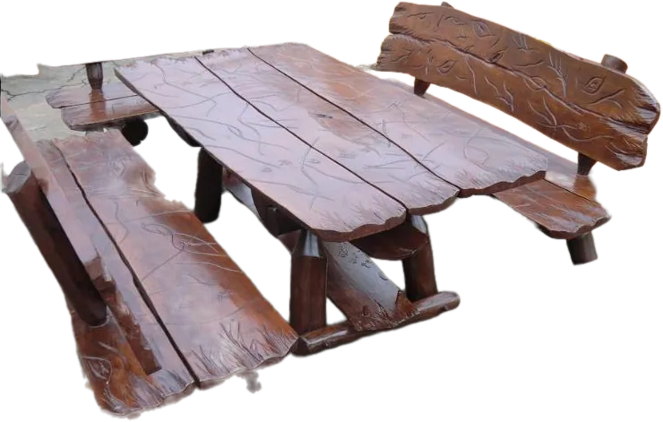
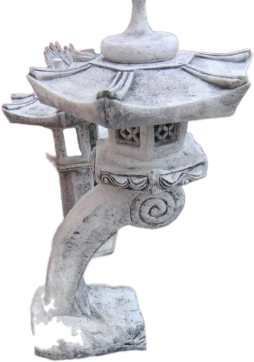
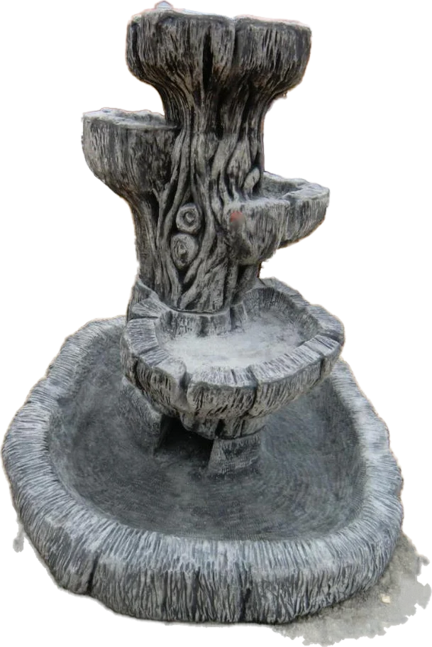
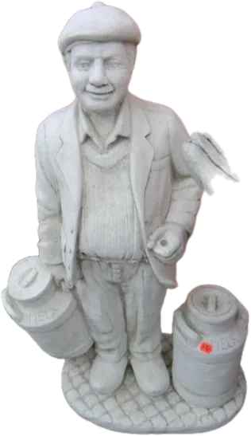
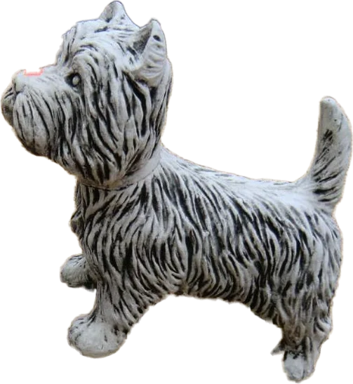

Gartenmöbel & Gartendekoration · Kirkel-Altstadt
Natürlich.Mit Herz.
Massive Gartenmöbel, handgefertigt aus Eiche. Rustikale Hollywoodschaukeln. Figuren aus Beton. Zum Anfassen, Probesitzen und Mitnehmen – in unserer Ausstellung an der Ortsstraße 69.

01Wie alles begann
Vom Landschaftsgärtner zum eigenen Garten-Traum.
Janusz Wojtasczyk hat jahrelang als Landschaftsgärtner die Gärten anderer Leute gestaltet. 2011 machte er aus seinem Hobby seinen Beruf – und gründete den Garten-Traum in Kirkel-Altstadt.
Seitdem steht an der Ortsstraße 69 eine Ausstellung, an der man im Vorbeifahren kaum vorbeikommt: Tische, Bänke und Schaukeln aus massivem Holz – und ein ganzer Hof voller Figuren aus Beton.
- 2011Gründung
Aus dem Hobby wird der Beruf: Janusz eröffnet den Garten-Traum in Kirkel-Altstadt.
- 2012Auf Messen
Mit Gartenmöbeln auf der Rhododendronmesse Gut Lindenfels und der Hausmesse Blickensdörfer.
- ✦Gaststuben
Ganze Gaststuben, Theken und Biergärten aus massivem Holz eingerichtet.
- HeuteEiche, von Hand
Handgefertigt aus Eiche, sofort verfügbar – zum Abholen oder Liefern.


02Handgefertigt aus Eiche
Für Generationen gebaut.
Dicke Bohlen, Beine aus ganzen Stämmen, jede Kante von Hand. Keine zwei Garnituren sind gleich – die Maserung schreibt jedes Mal eine andere Geschichte.





Tisch mit Ablage
Platte aus breiten Bohlen, darunter eine Ablage, Bänke mit geschwungener Lehne.
Garnitur mit Sesseln
Zwei Bänke, zwei Sessel, Beine aus ganzen Stämmen.
Tisch mit zwei Bänken
Der Klassiker – so schwer, dass ihn kein Sturm verrückt.
Rustikal, wie gewachsen
Unregelmäßige Kanten, Streben aus Ästen, jede Bohle ein Unikat.
Runde Tafel für sechs
Runder Tisch mit sechs Stühlen – fürs große Sonntagsfrühstück.
Dunkel geschnitzt
Mit Blättern in Lehne und Platte geschnitzt, in dunklem Ton.


03Hollywoodschaukeln
Einmal anschubsen, bitte.
Rustikale Schaukeln aus Rundholz – mit Dach, an Ketten, mit viel Platz für zwei. In der Ausstellung dürfen Sie probeschaukeln.

04Figuren aus Beton
Ein ganzer Hof voller Figuren.
Adler mit ausgebreiteten Flügeln, Pagoden-Laternen, Brunnen, Vogeltränken, Tiere und Menschen – aus Beton gegossen und für draußen gemacht.
Leuchten Sie mal rein – mit Maus oder Finger.





05Für Gastronomie & Gemeinden
Wo viele Menschen sitzen.
Restauranteinrichtungen, Stühle und Hocker aus massivem Holz – für Gaststube, Biergarten oder das nächste Gemeindefest.

an die Kirchliche Gemeinde Vogelbach, Simultankirche St. Philippus u. St. Jakobus: „Wir freuen uns, dass unser Holzset ein Teil eurer Gemeinschaft ist!“


Jetzt im Herbst
Saisonfinale.
Janusz räumt auf und macht Platz für die neue Saison. Restposten gibt es jetzt zu Sonderpreisen – solange der Vorrat reicht. Und ab 2027 kommt ein neues Sortiment.
Lieferung
Egal wie groß oder schwer – wir bringen’s.
Wohin?
Ab 1.000 € Einkaufswert liefern wir im Umkreis von 10 km kostenlos bis zu Ihnen nach Hause. Pro weiterem Kilometer 1,00 € Zuschlag.
„Große Auswahl an Garten Dekoration und Holztische, Bänke und Schaukel.“
„Top Preise und sehr gute Qualität!“
„Sehr zu empfehlen und sehr freundlich.“
Besuch
Herzlich willkommen.

- Montag8:30–18:30
- Dienstag8:30–18:30
- Mittwoch8:30–18:30
- Donnerstag8:30–18:30
- Freitag8:30–18:30
- Samstag8:30–18:30
- Sonntaggeschlossen

Anfrage
Schreiben Sie uns, was Ihr Garten braucht.
Wir melden uns mit Preis und Liefertermin. Oder rufen Sie einfach an: 0176 47161931.